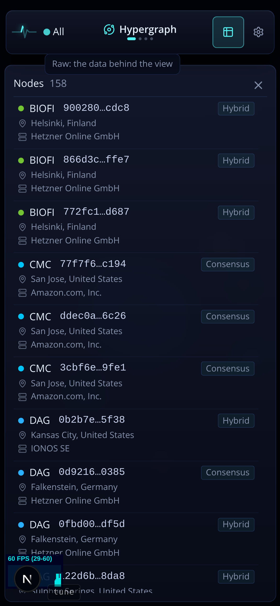

Today each row is three lines: network + node id + make-up chip, then location, then provider. Location and provider are Geography's lens (E1 now leads with them there); Hypergraph's question is what each node is in the architecture: which network, which layers it runs. (Counts in the mockups are illustrative.)
0 Now (Hypergraph)

F1 Grouped by network, layers first recommended
Network plates (the same group header as B1 and E1): the network's dot and name, its node count on the right. The DAG core first, then the metagraphs busiest first, as the explorer lists them.
Each row is one line: the make-up word with its layer codes (Hybrid · L0 cL1 dL1, the node card's own vocabulary) on the left, the short node id on the right.
Location and provider leave the row: they are Geography's (E1), and the node card states them one tap away. Three lines become one, so a screen shows about three times as many nodes.
A node that serves several networks appears under each, as the scene draws it under each hub.
Nodes 158
DAG88
Hybrid L0L10b2b7e…5f38
Consensus L00d9216…0385
Hybrid L0L10fbd00…df5d
Dor Technologies20
Consensus L04c1e8a…77b2
Data dL18e02f4…a915
BioFi3
Hybrid L0cL1dL1900280…cdc8
Hybrid L0cL1dL1866d3c…ffe7
Hybrid L0cL1dL1772fc1…d687
Under a committed network the list shows that network's plate only. The layer codes come from the same composition vocabulary the node card and the desktop Layer column use, so the three cannot disagree.
F2 Flat, one line per node
No groups: each row reads network dot + ticker, short node id, and the make-up chip at the right edge (today's first line, alone).
The smallest change (the two place lines go), but the ticker repeats down the list and the layer codes stay hidden behind the make-up word.